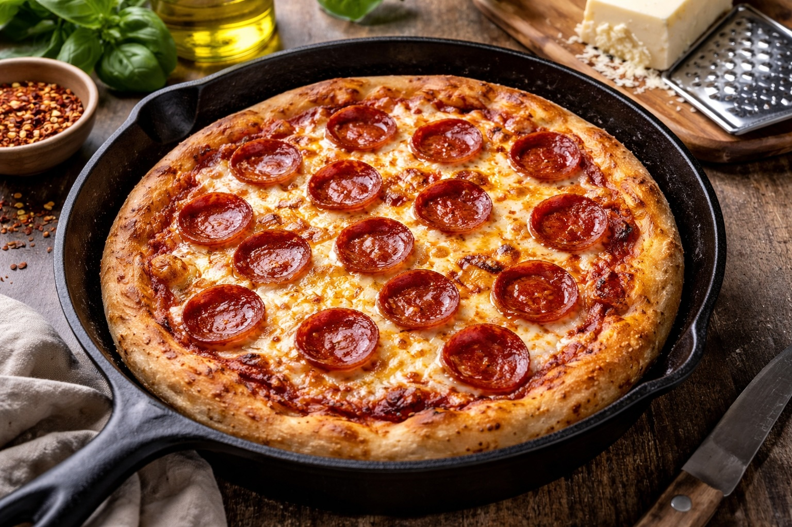

Whole Foods Recipes: Cast Iron Pizza
Last updated: March 10, 2026

A whole-food cast iron pizza made with simple dough, canned tomatoes, block mozzarella, and pepperoni. This version keeps the ingredient list clean while producing a crisp crust and classic pizza flavor without restaurant shortcuts.
- Simple dough works: flour, water, yeast, salt, and olive oil are enough for excellent pizza.
- Cast iron creates a crisp base: no pizza stone is required.
- Block mozzarella melts better: fresh shredded cheese performs better than pre-shredded blends.
- Keep toppings light: simpler pizzas usually bake better and taste cleaner.
Purpose
Pizza is one of the most widely eaten foods in modern life, but it is often made with highly processed ingredients and low-quality oils. This version brings pizza back to basics using simple dough, real cheese, and tomatoes in a cast iron pan.
Total time
- Prep time: about 10 minutes
- Dough rise: 45–120 minutes
- Cook time: 10–12 minutes
- Total: about 1 to 2 hours
Ingredients
Dough
- 2 cups flour
- ¾ cup warm water
- 1 tsp yeast
- 1 tsp salt
- 1 tbsp olive oil
Sauce
- Canned tomatoes
- Pinch of salt
- Small drizzle of olive oil
Use about 2–3 tablespoons of sauce per pizza.
Cheese
- Galbani mozzarella block, shredded or thinly sliced
Use about ¼–⅓ pound per pizza.
Toppings
- Galbani mozzarella cheese (¼–⅓ lb)
- Thinly sliced pepperoni from a stick
Slice pepperoni thin with a knife. About 12–18 slices works well for a 10‑inch pizza.
Equipment
- Cast iron skillet
- Oven
- Mixing bowl
- Knife and cutting board
- Optional rolling pin
Preparation
Shred or slice the mozzarella from the block. Slice pepperoni thin from the stick. If using canned tomatoes, crush or mash them lightly with a pinch of salt and a small drizzle of olive oil to create a simple sauce.
Method
- Mix flour, yeast, salt, warm water, and olive oil until a dough forms.
- Knead lightly for 1–2 minutes.
- Cover and let the dough rise for 45–120 minutes.
- Preheat oven to 475°F.
- Divide the dough into two equal pieces.
- Stretch each piece into a small rustic circle.
- Add a small amount of olive oil to the cast iron pan.
- Place dough in the pan and add sauce, mozzarella, and pepperoni if using.
- Cook on the stovetop over medium heat for 2–3 minutes.
- Transfer the pan to the oven and bake 10–12 minutes until golden and bubbling.
Finish
Let the pizza rest for about 2 minutes before slicing. Optional: drizzle a very small amount of olive oil around the crust for a restaurant-style finish.
Notes
- Cast iron safety: the pan and handle become extremely hot when used on the stovetop and in the oven. Always handle with oven mitts.
- Pan size: this recipe works well with a 10‑inch cast iron skillet.
- Crust thickness: early homemade pizzas often produce thicker crust. Stretch the dough thinner for a lighter pizza.
- Do not overload toppings: too much sauce or cheese can make pizza soggy.
- Block mozzarella is best: it melts more cleanly than pre-shredded cheese.
- Stovetop start helps: beginning in the pan helps crisp the base before the oven stage.
- Broiler option: if the top needs more color, use the broiler for 1 minute at the end.
Personal note
Pizza is one of the foods most often reduced to low-quality convenience ingredients. Making it at home with simple dough, real cheese, and tomatoes turns it into something far more satisfying while keeping the familiar flavor everyone enjoys.
Next steps
Continue with more Whole Food Cooking.
This article focuses on general food quality and cooking with quality ingredients, not medical advice.